EXPANSION NETWORK · 1 ACTIVE · 3 IN DEVELOPMENT · 10 CANDIDATES
STATUS // IN DEVELOPMENT

Global Nodes.
The model that works in San Francisco — house + lab + capital + cohort — replicates wherever biology and ambition concentrate. One organism, many habitats.
A node is not a house with a logo on it. Every location must pass the same five-part specification before the organism commits — each requirement load-bearing, none optional.
REQ_01
Terrain
Location-Specific Advantage
The city itself must be the accelerant: a vertical where local infrastructure, regulation, talent, or industry gives founders an edge they cannot get anywhere else.
Non-negotiable
REQ_02
Capital
Active Co-Investment Network
Local angels, funds, and institutions ready to co-invest alongside Haus Fund — so every demo day has a room of committed capital, not tourists.
Non-negotiable
REQ_03
Habitat
A 15-ish Bedroom House
Big enough to house a full cohort; intimate enough that the kitchen table stays the center of gravity. The house is the instrument.
Non-negotiable
REQ_04
Network
Vertical Partnership Support
An active partnership network in the node's specific vertical — labs, manufacturers, hospitals, regulators, associations — wired in before the first cohort arrives.
Non-negotiable
REQ_05
Talent
The Right People In The House
A Program Manager operating as a member of our team and a venture scout — plus an embedded scientific communicator producing media and video on the founders.
Non-negotiable
01 / In Development
Priority nodes.
NODE_SJU · PHARMA MFG
PHARMHAUS
In Development
San Juan · Puerto Rico · USA
The thesis: Puerto Rico has decades of cGMP infrastructure, a deep pharma manufacturing workforce, and federal jurisdiction that keeps FDA pathways simple.
The build: In conjunction with BioLeap — operated by parallel18 — residents get lab space at the Confluence Center in Science City, plus cGMP pilot plant access.
The living: Cohort housing anchored at Casa Chironja, a beachside coliving compound in San Juan.
cGMP Pilot PlantsR&D Tax CreditsUS JurisdictionWet Lab
NODE_UKB · CELL & GENE THERAPY
CELLHAUS
Sep 2026
Port Island · Kobe · Japan
The thesis: Japan's conditional-approval pathway for regenerative medicine lets cell and gene therapies reach patients years ahead of other markets.
The build: Lab space inside KBIC — the Kobe Biomedical Innovation Cluster — with cohort living space on campus. Bench and bed on the same island.
The launch: First cohort targeted September 2026 in partnership with Frontier Humans, running into Mirai Tech PopUp City on Port Island.
The thesis: Argentina punches far above its weight in bioscience and its agtech sector sits on top of one of the planet's great agricultural engines.
The build: In conjunction with Crecimiento, with lab and coworking space at +54 Lab inside the Parque de Innovación, Buenos Aires' science and technology district.
The network: Industry access through the Cámara Argentina de Biotecnología's member companies and startup program.
DeSciAgTechLab CoworkingPop-Up City Energy
02 / Candidate Habitats
Where the organism goes next.
Ten cities under evaluation — each chosen because its local ecosystem gives one biotech vertical an unfair advantage. A node only opens where the city itself is the accelerant.
MEL · Australia
TRIALHAUS
Clinical Trials
43.5% R&D tax rebate + fast CTN approval. Fastest, cheapest Phase I/II trials with FDA-acceptable data.
MTY · Mexico
FERMHAUS
Industrial Biotech
Mexico's industrial capital. Tec de Monterrey talent + nearshoring momentum for fermentation & bioprocess scale-up.
BOS · USA
BIOMEHAUS
Microbiome Engineering
Densest life-science talent pool. MIT/Harvard corridor + the investors who already understand the space.
NYC · USA
IMMHAUS
Immuno-Oncology
MSK + Columbia KOL network. One subway ride from trial sites, KOLs, and the patient populations that define the field.
LHR · UK
DIAGHAUS
AI-Driven Diagnostics
NHS-scale health data, world-class genomics infrastructure, Europe's deepest AI talent bench.
CDG · France
LUXHAUS
Luxury Biotech
Where biotechnology meets the maisons. Fermented actives, biofabricated materials, longevity science for the luxury houses.
BSL · Switzerland
SENSORHAUS
Biosensors
Pharma's European capital × Swiss precision instrumentation. For sensing hardware that has to be exact, regulated, trusted.
SZX · China
FABHAUS
Electronics & Hardware
World's fastest hardware iteration loop. CAD to working device in days, not quarters.
SHA · China
SCALEHAUS
Contract Research
Global CRO/CDMO engine room. Preclinical programs, chemistry, and manufacturing at unmatched speed and cost.
??? · Your City
___HAUS
Open Protocol
Know a city with an unfair advantage for one biotech vertical? The organism is listening.